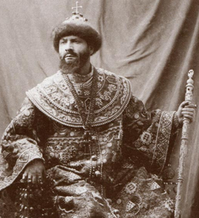
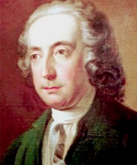
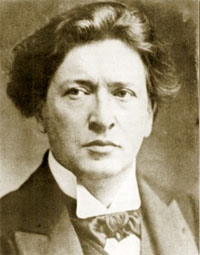
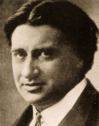

Cette chronique n'est nullement une histoire de l'opéra, même condensée, d'ailleurs dix épais volumes n'y suffiraient pas. C'est plutôt un assemblage de réflexions disparates sur (l'état d')un art qui ne cesse de passionner les uns et d'irriter les autres. Etrangement, bien qu'en 400 ans, on ait écrit des opéras par centaines voire par milliers, la liste des oeuvres que l'on monte régulièrement à la scène tient curieusement en quelques pages seulement. Les grandes Maisons d'opéra, soucieuses de maîtriser un budget en équilibre instable, ont en effet tendance à (re)programmer les mêmes oeuvres. De cette façon, elles assurent la recette auprès d'un public peu avide de nouveautés. Les oeuvres (dites) marginales sont donc rarement montées et quand elles le sont, c'est généralement sur des scènes de province - ce n'est nullement condescendant -, leur façon d'exister autrement. Se maintenant rarement à l'affiche, elles font heureusement l'objet d'enregistrements pris en charge par des Labels aussi courageux qu'éclectiques. Ces oeuvres négligées seront donc évoquées ci-après, au même titre que les grands "tubes", parce que c'est une des vocations de ce site et que c'est justice.
les Statistiques du MET
Statistiques du MET (En rouge les 4 "HITS")
L'étroitesse du répertoire des grandes maisons d'opéra est parfaitement attestée par un ensemble de statistiques tenues à jour. Les archives du MET (Le prestigieux Metropolitan Opera House, New York) sont éloquentes à cet égard : depuis 1883, date de la création de ce théâtre, 4 opéras ont battu tous les records de programmation : Aïda, La Bohême, Carmen et La Traviata (Retenez les premières lettres, A, B et C, et ajoutez-y la lettre T). Pour davantage de détails, concernant en particulier les statistiques récentes, le site operabase.com propose un petit jeu interactif qui devrait ravir les amateurs : les productions à travers le monde y sont compilées, depuis la saison 2004-5.
Tous genres vocaux confondus, il vous est donc possible d'afficher les "hits" en tous temps et en tous lieux. D'une manière générale, si l'Europe privilégie Mozart et Verdi, l'Amérique du Nord prébiscite Puccini avec, entre les saisons 1996-97 et 2006-07, un trio de tête reprenant La Bohême (300 représentations), La Traviata (281) et (l'inattendue) Madame Butterfly (272). Bien sûr, ce "hit parade" change un peu chaque année mais tant que cela. On observe, par exemple, qu'au cours de la saison 2015-2016, les 10 opéras les plus fréquemment montés ont été : Verdi (2 fois : Traviata et Rigoletto), Mozart (3 fois : La Flûte enchantée, Les Noces de Figaro et Don Giovanni), Puccini (3 fois : Tosca, La Bohème et Madame Butterfly), Bizet (Carmen) et Rossini (Le Barbier de Séville). Les maisons d'opéras "de seconde main", très nombreuses en Amérique du Nord, sont comparativement plus éclectiques : c'est assez naturellement vers elles qu'il faut se tourner pour entendre des oeuvres rares ou contemporaines de compositeurs nord-américains.
L'opéra, son ambition et ses limites
L'opéra ambitionne d'être un art total, mêlant la musique, le chant et la danse au théâtre des passions humaines. Une scénographie est censée habiller l'oeuvre avec goût et intelligence (Direction des acteurs, décors, costumes, éclairages, ...), soulignant fidèlement l'action ou la transposant dans un monde plus actuel. L'opéra est-il toujours ce spectacle total qu'il ambitionne d'être ? Certainement pas car, au bilan, peu d'oeuvres ont réussi ce pari ambitieux : Le Couronnement de Poppée, Les Boréades, Don Giovanni, Carmen, Tristan und Isolde, Othello, Boris Godounov, La Bohême, Der Rosenkavalier, ... .
Pour atteindre cet objectif ambitieux, l'opéra doit vaincre quelques obstacles sérieux. Il doit puiser aux sources d'un thème suffisamment intemporel pour supporter les conventions du genre et sur le long terme le poids des reprises dont il fera l'objet. Cela n'est possible que si le compositeur a été épaulé par un librettiste compétent, capable d'opérer un découpage scénique supportant les contraintes de la mise en musique. On mentionne, à cet égard, les collaborations légendaires entre Francesco Busenello et Monteverdi, Lorenzo da Ponte et Mozart, Arrigo Boïto et Verdi ou Hugo von Hofmannsthal et Strauss et on rappelle que Wagner fut son propre librettiste.
Les passions humaines ne variant guère d'un siècle à l'autre, les intrigues ont tendance à tourner en rond entre vengeances amoureuses, jalousies destructrices et amours contrariés et le danger est réel de sombrer dans la banalité convenue. Certaines oeuvres ont connu le privilège d'entrer au grand répertoire sans respecter ces critères. Bien que dramatiquement banales (Mais non musicalement) elles donnent régulièrement du fil à retordre aux metteurs en scène qui parfois ne s'en remettent pas. Un sommet du genre a sans doute été atteint dans Il Trovatore, de Giuseppe Verdi, une oeuvre que tous les publics adorent pour sa collection de tubes inoxydables : on demeure stupéfait devant la richesse de l'inspiration musicale que l'auteur a puisée dans l'intrigue invraisemblable d'un enfant enlevé à sa naissance et tué à l'âge adulte par son propre frère qui croyait se venger de la kidnappeuse (Je vous épargne les détails).
Il faut s'en faire une raison, l'opéra repose sur un ensemble de conventions, théâtrales et musicales, parfois dures à avaler. Celui qui refuse d'y adhérer n'est pas fait pour l'opéra et réciproquement. On a régulièrement prédit l'extinction de ce spectacle improbable au motif que ces conventions compromettaient sa survie mais, en fait, il n'a jamais cessé de bien se porter. Plus vivant que jamais, il tente même de séduire un public de plus en plus jeune, par exemple en frappant à la porte de salles de cinéma spécialisées où chacun peut découvrir les grandes mises en scène du MET (ou d'ailleurs) ou encore au travers de chaînes TV spécialisées (Mezzo, Brava, ...). Car contrairement à une idée répandue, l'opéra n'est pas un art élitiste, il est accessible à tout le monde qui a des oreilles et un coeur prêts à vibrer au mystère de la voix nue; le BAC n'est même pas requis.
Le chant est la grande affaire de l'opéra, porté par de belles et grandes voix capables de rayonner sans intermédiaire électroacoustique leur énergie non solaire. D'une production à l'autre, même si l'oeuvre ne change pas, les voix changent et les amateurs guettent de nouvelles émotions dont ils ne se lassent pas.
Le pouvoir de la voix
Art total ou pas, les amateurs passionnés d'opéras sont prêts à (re)voir et à (ré)entendre leurs oeuvres favorites autant de fois qu'on les leur proposera car ils pensent, avec quelques raisons, que le spectacle sera à chaque fois différent.
"Prima la musica o la parola ?". Richard Strauss a fait de cette question (à peine modifiée) le thème de son opéra "Capriccio". L'oeuvre est très réussie mais le sujet n'a jamais vraiment dépassé le statut du prétexte théâtral. Il y a 100 ans, les amateurs d'opéra ne se posaient pas cette question ou plutôt ils y répondaient en affirmant la prééminence de la musique ou plutôt du chant. Leur conviction se basait sur l'existence d'un étonnant réservoir de "grandes" voix qui, leur dire n'existent plus, déformation nostalgique ou constat lucide ? Il est courant que les ancêtres déplorent la décadence actuelle (Rien n'est plus comme avant, de mon temps cela ne se passait pas comme cela - sous-entendu c'était mieux - , ...) et que la jeune génération sourie avec indugence à ce qu'elle prend pour un accès de sénilité. Cependant l'inventaire des grandes voix qu'on a pu entendre au cours des 100 dernières années et pour lesquelles des enregistrements existent, semblent démontrer que les grincheux n'ont pas toujours tort. Voici quelques chanteuses et chanteurs qui ont marqué leur temps et dites-moi si l'on peut encore entendre quelques chose de comparable aujourd'hui (Certains enregistrements sont fatalement anciens, ne vous laissez pas distraire par leur manque de fidélité) ?
Fedor Chaliapine (1873-1938) dans Don Quichote de Massenet, Enrico Caruso (1873-1921) dans Turandot de Puccini, Kirsten Flagstadt (1895-1962) dans Le vaisseau fantôme de Wagner, Jussi Björling (1911-1960) dans Turandot de Puccini, Elisabeth Schwarzkopf (1915-2006) dans Gianni Schicchi de Puccini, Birgit Nilsson (1918-2005) dans Salome de Strauss, Maria Callas (1923-1977) dans Macbeth de Verdi (en 9:15), John Vickers (1926-2015) dans Fidelio de Beethoven, Régine Crespin (1927-2007) dans Sapho de Gounod, Nicolaï Ghiaurov (1929-2004) dans Le Barbier de Seville de Rossini, Fritz Wunderlich (1930-1966) dans Xerxes de Haendel, Martti Talvela (1935-1989) dans La Flûte enchantée de Mozart, Luciano Pavarotti (1935-2007) dans Il Trovatore de Verdi, Kurt Moll (1938-2017) dans Boris Godunov de Mussorgsky.
Les sceptiques auront beau objecter qu'il n'y a aucune raison pour que les voix actuelles soient moins puissantes que jadis, les faits sont là et on peine à trouver une explication. Elle se situe sans doute au niveau de changements radicaux dans le style de vie contemporain. Tout va de plus ne plus vite et on pense à tort que l'on peut se lancer de plus en plus tôt dans des prouesses vocales qui ne connaîtront pas d'extinction (de voix !). Or les exemples abondent de chanteurs (ou de chanteuses) qui ont voilé leur cordes vocales en les sollicitant au-delà de leurs limites raisonnables. Les grands chanteurs sont programmés avec deux ou trois ans d'avance sur le calendrier et il est mal vu qu'ils se désistent : le moindre bobo est soigné énergiquement à grands coups de cortisone. La pollution atmosphérique fait le reste, sournoise mais ambiante, multipliant les allergies au niveau de la sphère ORL. Pris isolément, aucun de ces événements ne justifie l'hécatombe vocale mais sur le long terme les effets sont bien là que se produisent encore sur scène d'excellents chanteurs mais aucun n'apparaît comme une légende vivante.
Une conséquence que d'aucuns trouveront heureuses est que l'accès au chant s'est démocratisé, égalisant les voix mais les multipliant mais les soignant davantage en timbre qu'en puissance. Cela a particulièrement servi à la défense et à l'exploitation du répertoire ancien nécessitant des voix davantage agiles que puissantes. Ce que Wagner a perdu, Monteverdi, Cavalli, Haendel, Vivaldi, Rameau et Gluck l'ont gagné et ce n'est nullement négligeable.
Les excès de la mise en scène
Avec le temps, le débat sur les voix a cessé faute de grincheux et une autre question a surgi, "Prima la musica o la scenografia ?". Il existe une réponse simple et immédiate à cette question : il est parfaitement possible de se priver de mise en scène cela correspond à la mise en s-espace voire à la pure et simple version de concert. Le problème sugit précisémet lorsqu'on en prend l'initiative : certaines peovrs à vri dire la plupart ne résiste pas à la version de concert, le contenu musical en est tout simplement trop pauvre. les oeuvres ennueyeuses, il y en a, ont tout intérêt à beneficier du distracteur que constitue le décorum. La mise en scène a évolué au cours des siècles. Elle était volontiers grandiose à l'époque baroque, recourant à toutes sortes de machines aux effet merveilleux. Cela convenait aux histoires représentées issues de thèmes mythologiques. A partir des Noces de Figaro de Mozart et cela a duré pendant tout les 19ème siècle, les sujets ont délaissé l'Antiquité pour s'intéresser à des thèmes plus actuels. Cela a simplifié le travail des metteurs en scène qui ont rarement cherché à s'écarter du fil conducteur de l'oeuvre. La mise en scène de l'époque se voulait conforme aux attentes de l'histoire, jouant le rôle du cadre idéal pour une toile de maître. Dans Wagner, on se contentait de planter immobiles les grandes voix requises sans se préoccuper de les voir évoluer conformément à l'action en cours. Les très grands chanteurs n'apprécient que très modérément de se plier à des exigences qui ne sont pas du ressort de leur art. Rien que bouger les distrait déjà alors que dire lorsqu'on les invite à chanter assis ou couchés ? L'émission vocale ne s'accomode pas facilement de ce genre de contorsions et si elles sont devenues monnaie courante, c'est que les chanteurs ont gagné en mobilité ce qu'ils ont perdu en puissance vocale, explications.
Dans le meilleur des cas on se contentait de planter un décor fidèle à l'histoire en y faisant évoluer à leur aise les chanteurs devenus acteurs à peu de frais. D'ailleurs les grands chanteurs du passé n'auraient ni supporté ni accepté de se laisser dicter une évoltuion Dans la Bohême (de Puccini pour les distraits), un grenier faussement poussiéreux faisait l'affaire et le public était ravi lorsqu'il apercevait la neige tomber un soir de Noêl. Les chanteurs actuels bien sont plus conciliants en particulier parce qu'ils ne se penche modestement que sur un inventaire des procédés auxquels les compositeurs de toutes les époques ont eu recours afin de conduire une action en musique, du moins quand action il y avait.
Actuellement les maisons d'opéra sont confrontées à un problème corollaire de leur obstination à ne pas sortir d'un répertoire étroit : ayant de moins en moins de grandes voix à leur disposition et soucieux malgré tout de proposer des variantes suffisamment renouvelées pour conserver leur fidèle public, elles se tourent vers le renouvelement de la mise en scène, que l'ion désigne pompeusement sous 'angle de l Nouvelle production. ne se soucient de mises en scène actives et engagées que depuis relativement peu de temps.
L'objectif peut paraître secondaire voire anodin mais il ne l'est pas tant que cela : de tous temps, un problème difficile s'est posé de garantir l'équilibre entre des récitatifs censés faire progresser l'action et des airs lyriques destinés à libérer l'émotion accumulée. Un grand nombre de solutions ont été envisagées et exploitées avec plus ou moins de bonheur. C'est l'objet de cette chronique de les évoquer en musique, au bilan une autre façon de décliner l'histoire de l'opéra.
La distribution des rôles pose particulièrement problème toutes les fois que des choix liés aux exigences vocales de la partition contrarient la crédibilité de l'apparences scénique des acteurs. Jadis, on sacrifiait délibérément celle-ci au profit de celles-là : l'histoire de l'opéra a longtemps privilégié les voix éclatantes (qui ne manquaient pas) et c'était tant pis si l'apparence de Violetta ou de Brünnhilde s'écartait du canon supposé. L'amateur d'opéra avait appris à ne prêter aucune attention à ces étrangetés qui veulent qu'on meure en chantant à pleins poumons pourtant rongés par la phtysie : la beauté et la puissance des voix le dédommageait d'office.

Chaliapine dans Boris
Et puis il y a la voix : tous les nostalgiques grincheux vous le diront avec quelques raisons, les (très) grandes voix ont disparu, celles qui ont mûri des années en fûts de chêne avant de se frotter aux rôles écrasants sur des scènes aux dimensions raisonnables. Où sont passés les successeurs de Fedor Chaliapine, d'Enrico Caruso et plus près de nous de John Vickers, Fritz Wunderlich voire de Luciano Pavarotti ? Déjà vers 1850, Berlioz estimait que les salles italiennes mais aussi parisiennes étaient beaucoup trop grandes, privilégiant la recette à l'exercice de l'art vocal. Il professait qu'au-delà d'une distance critique par rapport à la scène, l'auditeur peut bien continuer d'entendre, il ne vibre plus. Le chanteur est alors condamné à s'époumonner plus que de raison au risque de sacrifier la nuance et, à terme, le timbre de sa voix. Que dire alors de nos chanteurs actuels certes fort méritants mais contraints de remplir un MET de 3800 places sans l'aide (officielle ?) d'aucune sonorisation !
Pour le néophyte qui se rend peu ou pas à l'opéra, le genre se résume à quelques grands airs fredonnables sous la douche, à condition d'être (vraiment très) doué. Ces airs fameux ont beau être (fatalement) toujours les mêmes, il semble impossible d'en épuiser la charge émotionnelle, en tous cas ils survivent à toutes les exécutions dans tous les sens du terme. Il ne viendrait à personne l'idée de relire sans cesse le même livre, de réentendre la même pièce de théâtre ou de revoir le même film, or cette addiction est habituelle à l'opéra pour une raison qui tient essentiellement au pouvoir de renouvellement de la voix chantée.
Cette observation apporte la réponse définitive à la question essentielle dont Richard Strauss a fait le sujet de son opéra "Capriccio" : "Prima la musica, dopo le parole" ou "Prima le parole, dopo la musica" ? On vient peut-être à l'opéra pour l'intrigue et/ou sa mise en scène mais on n'y retourne à coup sûr que pour la musique et singulièrement pour le chant. Car la voix humaine n'est jamais pareille à elle-même : elle a cette capacité de réinventer l'oeuvre la mieux connue du monde. La mise en scène syntaxique (décors, éclairages et costumes, conduite de l'action et des acteurs) ne sont plus que des décors pas toujours du meilleur goût d'ailleurs.
Le chant théâtral, comme la musique instrumentale, exige idéalement la présence dans la salle. Ce n'est pas toujours possible ne serait-ce que parce qu'une oeuvre est rarement montée au-delà d'une douzaine de représentations au terme desquelles les protagonistes sont obligés de s'éclipser pour se produire ailleurs.
Faire progresser l'action en musique
Tout opéra doit répondre à la question fondamentale de la progression de l'action. Ce ne sont pas les grands airs qui y contribuent car ils ne font qu'exprimer et développer l'émotion du moment, la colère, la vengeance, la jalousie, l'amour, le dépit et tant d'autres. Au cours de l'histoire, quantité de solutions ont été essayées qu'il vaut la peine de rappeler brièvement.
Parmi les écueils les plus difficiles à éviter figure celui de l'alternance entre les récitatifs et les airs. Ce problème a reçu quantité de solutions correspondant à l'époque.
Le recitativo cantando est la réponse naturelle à la question posée d'un art nouveau où le théâtre serait décliné en musique, sans fioriture ni excès mais plutôt en épousant les ressorts dramatiques de l'action. Après quelques tentatives imparfaites, c'est Claudio Monteverdi qui a généralisé la formule madrigalesque aux exigences théâtrales.
L'opéra italiena dès lors pris l'ascendant sur tous les autres au point que pendant quasiment deux siècles, les compositeurs de toutes provenances ont écrit sur des livrets italiens, histoire de tirer le meilleur parti de la vocation chantante de cette langue. Cependant, les acteurs-chanteurs sont devenus des personnages importants de la scène capables de dicter leurs exigences afin de se mettre en valeur. Une surenchère est née dans l'art de chanter plus fort, plus vite et surtout plus haut : le but est de moins en moins d'assurer le juste équilibre en le récit(atif) et le chant, les compositeurs baroques ont fignolé les airs de bravoure et bâlé les récitatifs;
Le recitativo secco est devenu la plaie caractéristique de l'operia seria. Il a sévi de façon endémique dans l'opéra italianisant aux époques baroque et (par contagion) classique (Haendel, Vivaldi, Hasse, ..., Haydn, Mozart, ...). Ce fut l'époque où les compositeurs de toutes provenances géographiques admirent implicitement que la langue italienne était la mieux à même de restituer le caractère chantant de leurs partitions et d'y mettre en valeur une forme de pyrotechnie vocale. La virtuosité vocale en pleine ascension a dès lors primé sur l'élaboration d'un théâtre réaliste : les thèmes abordés, hérités de l'Antiquité ou de la Mythologie, étant rarement susceptible de développer une action à résonance universelle, il a été imaginé d'expédier les dialogues intercalaires aussi vite que possible avant d'enchaîner sur l'air suivant. Le dernier opéra de Mozart (La Clémence de Titus, une commande pour le couronnement de Leopold II comme roi de Bohême) illustre encore fort tardivement ce principe lassant : le compositeur pressé par le temps (six semaines allouées, tout compris !) n'a tout simplement pas eu le temps de soigner ses récitatifs inutilement longs. Ces dialogues compulsifs, souvent ponctués par un continuo bâclé, peuvent être tellement envahissants qu'il n'est pas rare qu'on y pratique des coupures bienvenues au risque d'obscurcir le déroulement de l'action. C'est particulièrement le cas lorsqu'on enregistre l'oeuvre en studio.
La tragédie lyrique, de Lully à Rameau, a inventé le modèle du récitatif classique, calqué sur la réthorique du théâtre du même nom. La langue française s'y trouve à l'aise autorisant la musique à en souligner la diction. Cette solution est le produit d'une époque et on ne peut y adhérer qu'en respectant les conventions en usage.
Le singspiel a opté pour la solution de facilité consistant à intercaler des intermèdes parlés entre les airs. Ils préservent le naturel du discours animé dans la langue généralement native du compositeur. La Flûte enchantée est le prototype parfait de ce mode d'expression et il a été repris, dans la foulée, par Beethoven dans Fidelio et par Weber dans Der Freischütz. L'Opéra comique parisien a repris la formule à son compte dans des oeuvres à vocation légère destinée à un public bourgeois désireux de suivre l'action même dépourvue d'intérêt. Certaines oeuvres plus ambitieuses (Carmen de Bizet), non seulement par le sujet traité mais encore par la manière sont devenues tellement célèbres qu'on a fini par effacer les dialogues parlés qui auraient pu nuire à leur universalité.
L'Opera buffa est une spécialité italienne couvrant des oeuvres à prétention comique, dont on trouve l'exemple emblématique chez Pergolèse (La Serva Padrona) ou Cimaros (Le ce qui n'est pas une raison pour effectuer la traduction française en Opéra comique (Cf le paragraphe précédent). La musique y est légère comme le sont les motivations de l'auteur lorsqu'il s'agit effectivement de mettre en scène une farce comme ce sera le cas chez Rossini voire Donizzetti. Mais il arrive que de vrais problèmes sociétaux (de l'époque) soient abordés masquant la satyre sous des dehors faussement badins : Mozart dans les Noces de Figaro.
Deux génies à vrai dire fort différents, Giuseppe Verdi et Richard Wagner, ont incarné presqu'à eux seuls l'opéra du 19ème siècle. Ils ne s'appréciaient guère mais n'avaient rien à redouter l'un de l'autre tant leurs univers étaient disjoints. Au plan strictement musical Wagner est supérieur mais c'est l'inverse qui s'affirme lorsqu'on considère le plan mélodique et le pouvoir de persuasion. Mélodie infinie :
Le vérisme est l'autre composante de l'opéra italien de la fin du 19ème siècle, associé à Pietro Mascagni, Ruggero Leoncavallo, Umberto Giordano, Francesco Cilea et Giacomo Puccini, qui ont voulu transposer dans leur discipline le naturalisme de Balzac ou Mautpassant en se penchant sur la condition humaine des couches sociales peu favorisées. Pietro Mascagni, Ruggero Leoncavallo, Umberto Giordano, Francesco Cilea et Giacomo Puccini
Spechgesang :
Musik (Cardillac) Nouvelle objectivité refus de l'impressionisme, de l'expressionisme et du wagnérisme
https://www.cennarium.com/genre/opera/
naissance de l'opéra
L'idée d'un spectacle total flottait dans l'air des années 1580. D'une part les mystères médiévaux (Aucassin et Nicolette) fortement ancrés dans les récits sacrés de la chrétienté (Jeu d'Adam et Eve, d'autre part les Jeux médiévaux (Robin et Marion, d'Adam de la Halle Aucassin et Nicolette d'un trouvère anonyme), alternant récits et chants avaient épuisé leurs faibles moyens et ils appelaient d'autres sujets plus profanes, d'autre part la musique polyphonique où les voix s'entremêlaient de façon tellement savante qu'il n'était même plus possible de comprendre ce qui se disait appelait une forme de chant épuré, au bilan un spectacle original était attendu où la complexité résiderait ailleurs, dans le choix de sujets porteurs et parlants, dans un accompagnement instrumental égalitairement adapté au chant et dans une mise en scène de plus en plus élaborée.
L'opéra est né en Italie, de parents italiens. Les premiers essais ne furent guère que des intermèdes chantés que l'on tente éventuellement de reconstituter aujourd'hui à partir des fragments existants (La Pellegrina (1589), La Dafne (1597), Euridice (1600)). L'acte officiel de baptème du genre entièrement constitué concerne l'Orfeo de Claudio Monteverdi et il mentionne la date du 24 février 1607, date d'ouverture du carnaval à la Cour de Mantoue. Nul ne conteste raisonnablement que l'opéra est né en Italie. Vous trouverez des études d'archéo-musicologie prêtes à soutenir que le Jeu Médiéval est bien antéireur et qu'il représente à sa façon une première tentative d'unir les composantes du drame en musique mais ce sont là des supputations d'experts qui nous éloignent du sujet qui a été dans l'âme l'expression de l'émancipation du chant. Jusqu'à la fin du 16ème siècle celui-ci est resté prisonnier de conventions formelles extrêmement contraignantes dont l'archétype est le madrigal à N voix. De plus en plus sophistiqué pour ne pas dire déconnecté des préoccupations d'un âge nouveau le moment était venu de célébrer la mélodie chantée linéairement en suivant les inflexions d'une voix ne craignant plus de trahir ses émotions. Seule l'Italie pouvait trouver une solution à ce problème urgent car elle possédait le réservoir des voix qui ne lui avait guère été utile jusque-là. Quelques essais timides ont lancé l'initiative d'un genre qui s'est cherché sa voie pendant quelques décennies.
Les premières monodies dans le nouveau stile rappresentativo sont dues à Galilei (œuvre perdue) et à Caccini (Nuove musiche). Peri les surpassa sur le plan de la qualité dramatique avec sa pastorale Dafne, composée entre 1594 et 1595,représentée en 1597 au Palazzo Corsi, puis au carnaval de 1598. Le succès en fut tel qu’on lui demanda un ouvrage du même genre à l’occasion du mariage d’Henri IV et de Marie de Médicis : ce fut Euridice, représentée en 1600 au Palazzo Pitti), écrite en collaboration avec Giulio Caccini (le prologue présenté ci-avant est de Peri); en 1602, chacun termina cette oeuvre de son côté. Euridice est le premier opéra dont la musique nous soit parvenue intégralement (En voici une version estudiantine made in USA, qu ia au moins le mérite d'exister).
Le premier baroque, de Monteverdi à Cavalli, a mêlé le verbe à la musique et la musique au verbe sans chercher à ce qu'une composante écrase l'autre. Cela a été rendu possible par le soin avec lequel le discours a été ponctué par un continuo élargi et toute édition moderne de ce type d'oeuvre doit en tenir compte. Stefano Landi (1590-1655) (La Morte d'Orfeo) Pietro Antonio Cesti (1623-1669) (Orontea et le gigantesque Il Pomo d'Oro, 1667, dont la durée approche les 6 heures !)
le problème majeur qui se pose à la musique de Gluck c'est qu'elle n'a pas encore reçu les attentions nécessaires auxquelles ont eu droit des musiciens parfois bien moins doués. On peut cepndant espérer qu'une génération d'interprètes classiqueux va poser le problème et le résoudre;
Le baroque natif (1600-1700)
Un artiste de génie, Claudio Monteverdi (1567-1643), a incarné les débuts de cet âge d'or qui allait durer un siècle.
Claudio Monteverdi
Monteverdi est assurément un des plus grands compositeurs européens, le premier à avoir affiché une éternelle modernité : on peut dire qu'il y a eu l'avant et l'après Monteverdi. Cet artiste détient pourtant le triste record du plus grand nombre de partitions perdues, singulièrement des opéras (Arianna, Le Nozze d'Enea con Lavinia et une bonne douzaine d'autres). Quand on sait le prix des trois qui nous sont parvenus (Orfeo, Il Ritorno di Ulisse in Patria et L'incoronazione di Poppea), on demeure inconsolable. Il est possible que les oeuvres égarées correspondent à des travaux collectifs impliquant le concours d'élèves et que la dispersion du travail a entraîné celle des manuscrits. Rappelons, à l'appui de cette thèse, que le Couronnement de Poppée, l'oeuvre ultime du Maître, nous est parvenue en pièces détachées et que l'on a jamais vraiment élucidé la part prise par chacun, dont Cavalli, dans sa composition. D'ailleurs, le thème de l'air conclusif Pur ti miro, pur ti godo, assurément l'un des plus beaux duos amoureux de l'histoire de la musique, fut apparemment emprunté à l'opéra, Il Pastor regio, de Benedetto Ferrari, un musicien remarquable dont nous aurons à reparler. Tant que vous y êtes, réécoutez tout l'acte 3 de l'opéra dans la version Harnoncourt-Ponnelle et profitez de l'extraordinaire moment théâtral que procure le finale (à partir de 23 min 40 sec) : le couronnement de Poppée (Rachel Yakar), sa jubilation intérieure puis son duo magique avec Néron (Eric Tappy), la perfection est parfois de ce monde.
... et la musique théâtrale
L'expression madrigalesque des sentiments appelait une action et sa mise en scène théâtrale. L'opéra est entré en gestation en Italie, peu avant 1600, le temps que divers compositeurs expérimentent des formes possibles :
Angelo Poliziano : La Fabula di Orfeo
Une oeuvre étonnamment précoce et collective est demeurée sans lendemain immédiat : La Fabula di Orfeo (1480, d'après des poèmes d'Angelo Poliziano (1454-1494)). Due à la collaboration de Serafino dall' Aquilano, Marchetto Cara, Bartolomeo Tromboncino et Michele Pesenti, elle fut la première tentative de mise en musique du mythe souvent reconduit d'Orphée. Le magnifique CD ci-contre, paru chez K617, en ravira plus d'un, davantage que l'ancien enregistrement de l'ensemble Huelgas, pas encore rôdé à l'époque.
La comédie madrigalesque s'esseya à une transposition musicale de la Commedia dell'arte mais elle ne survécut pas longtemps à son côté caricatural qu'aucune intrigue digne de ce nom ne relevait. Les meilleurs spécimens parvenus jusqu'à nous sont dus à : Alessandro Striggio (Il Cicalamento delle Donne al Bucato, 1567), Orazio Vecchi (L'Amfiparnaso, 1594), Giovanni Croce (Triaca musicale, 1595, désolé pour l'interprétation ...) et Adriano Banchieri (La Pazzia senile, 1598 et La Barca di Venezia per Padova, 1605).
Jacopo Peri (1561-1633) trouva le bon chemin, en 1597, avec Dafne, une oeuvre aujourd'hui perdue, puis il récidiva 3 ans plus tard avec Euridice, une commande pour les noces florentines de Henri IV (absent !) et Marie de Médicis. Signalons que la même année, Giulio Caccini (1551-1618) qui avait collaboré à l'oeuvre de Peri, produisit sa propre Euridice, effectivement montée en 1602. De toute évidence, il s'était réservé le meilleur de son inspiration ! Comme Orfeo et Euridice, Dafne fut un thème à la mode et en 1608, Marco da Gagliano (1582-1643) écrivit la sienne en tous points excellente (Soit dit en passant, Dafne sera également le titre du premier opéra allemand, sur une musique d'Heinrich Schütz (1627), malheureusement perdue elle aussi). Toutes ces oeuvres se déroulent cependant encore largement à la troisième personne du singulier, un personnage souvent allégorique commentant l'action davantage qu'il ne la vit.
Bien qu'écrit dans la même veine allégorique, La Rappresentazione di Anima et di Corpo, d'Emilio de Cavalieri (1550-1602) a revendiqué le titre de premier opéra en date. C'est en tous cas ce qu'a affirmé son auteur, contestant de ce fait les prétentions similaires de Jacopo Peri. Aujourd'hui, il n'est pas rare qu'on contente tout le monde en considérant que vu son argument, La Rappresentazione est le premier oratorio profane de l'histoire.
Monteverdi mit, en fait, tout le monde d'accord en 1606 : la toccata initiale d'Orfeo a sonné l'avènement du baroque. Ce fut un coup de tonnerre semblable à ceux qui retentiront 200 et 300 ans plus tard à l'avènement des périodes romantique et moderne (L'Héroïque de Beethoven en 1804 et le Sacre du Printemps de Stravinsky en 1913). Les trois opéras montéverdiens, Orfeo, Ulysse et Poppée sont disponibles en plusieurs versions. On n'a jamais entendu meilleur Orphée que celui d'Eric Tappy (Corboz encore !) mais je ne suis pas certain que le CD reste disponible. Je ne vous querellerai cependant pas si vous préférez l'intégrale Harnoncourt (cfr supra), surtout qu'au DVD, vous profiterez de la mise en scène du regretté Jean-Pierre Ponnelle.
Les années 1680 ont vu naître une pléiade de musiciens tellement doués qu'ils sont tous passés à la postérité (Bach, Telemann, Vivaldi, Haendel, Hasse, Porpora, ...). Comme l'opéra était le genre à la mode on devine, qu'il s'en est écrit par dizaines et c'est sans compter quantité de petits maîtres doués pour la mélodie chantée. Seul le très protestant Johann Sebastian Bach n'a pas écrit d'opéra, c'eût été contraire à sa religion.
Antonio Vivaldi
Leonardo Vinci
Baroque italien
Prêtre réputé bigot mais nullement décidé à brider une veine mélodique pouvant a priori être jugée suspecte, Antonio Vivaldi (1678-1741) apparaît comme la star opératique du baroque finissant : renonçant au service religieux, en 1706, mais nullement à son habit, Il Padre Rosso a composé au moins 50 oeuvres du genre et encore le compte n'est pas certain. La santé sinon la qualité de cette musique saute à nos oreilles contemporaines qui en redemandent (On note, au passage, l'excellence des nombreux ensembles baroques qui restituent ces partitions avec beaucoup d'engagement) : L'Olimpiade (Concerto Italiano, dir. Rinaldo Alessandrini), La Silvia, L'Oraccolo in Messenia, Tito Manlio et L'Incoronazione di Dario (Academia Bizantina, dir. Ottavio Dantone), Farnace, Orlando finto Pazzo (Academia Montis Regalis, dir. Alessandro de Marchi), Atenaide et Montezuma (Modo Antiquo, dir. Federico Maria Sardelli), La Verità in Cimento et Orlando furioso (Ensemble Matheus, dir. Jean-Christophe Spinosi), Griselda, Armida, ..., impossible, en particulier, de citer tous les enregistrements parus chez Virgin ou dans le cadre de l'Edition Vivaldi en cours chez Naïve jusqu'en 2015. Comme chez Haendel, ne vous étonnez pas d'entendre des redites, on est au pays du pasticcio, l'appellation italienne du recyclage d'oeuvres antérieures.
Quelques musiciens moins essentiels ont écrit des oeuvres parfaitement estimables : Domenico Scarlatti (1685-1757) (Ottavia Restituita al Trono), Nicola Porpora (1686-1768) (Grand pourvoyeur d'airs virtuoses pour le castrat Farinelli : Polifemo) dans Semiramide riconosciuta (Accademia Bizantina, dir. Stefano Montanari) et surtout Leonardo Vinci (1690-1730) (La Partenope, superbe Artaserse (Concerto Köln, dir. Diego fasolis : Acte 3 à partir de 3:13:30 dont un fabuleux Philippe Jaroussky en 3:25:10 !), Catone in Utica). Voilà un génie (méconnu), normal me direz-vous, avec un nom pareil, n'empêche qu'il n'est pas de la famille de l'illustre inventeur. Même des musiciens parfaitement inconnus ont écrit de belles choses, tels Geminiano Giacomelli (1692-1740) (Merope, bien servi par Cecilia Bartoli), ou l'étonnant Riccardo Broschi (1698-1756) (Merope, Idaspe). Galuppi plutôt banal dans sa musique instrumentale fait beaucoup mieux à la scène avec L'Olimpiade.
Giovanni Battista Pergolesi (1710-1736) a illuminé de son génie éphémère la génération suivante. Ne passez pas à côté de son opéra, Lo Frate 'nnammurato, il contient tous les ingrédients du Pulcinella de Stavinsky, amusez-vous à les repérer. Il a aussi écrit une très belle oeuvre sur le thème récurrent de L'Olimpiade.
L'opéra italien a poursuivi son chemin grâce, entre autres, à Niccolò Jommelli (1714-1774) (Armida Abbandonata), Gennaro Manna (1715-1779) (Lucio Papiro dittatore) et Antonio Mazzoni (1717-1785) (Aminta) et l'opéra "à l'italienne", en langue garantie d'origine, s'est rapidement imposé sur toutes les scènes d'Europe, particulièrement bien servi par deux grands saxons, Georg Friedrich Haendel (1685-1759) et Johann Adolph Hasse (1699-1783).
Baroque saxon
Haendel a voyagé en Italie, entre 1707 et 1710, s'initiant aux exigences de l'art vocal national. Rome interdisant l'opéra à cette époque c'est à Naples et à Venise qu'il s'est frotté au genre de l'opéra y remportant des succès décisifs pour la suite de sa carrière. Rentré à Hanovre, il n'y est pas resté longtemps, entreprenant un long séjour en Angleterre, prenant la nationalité anglaise (et y perdant au passage le petit "e" de son nom). L'opéra seria "à l'italienne" étant passé de mode à Londres, vers 1738, il se recycla dans l'oratorio "à l'anglaise" ayant quand même eu le temps d'écrire au total Il a écrit une quarantaine d'opéras que l'on exhume progressivement (Labels Naïve et ???). On peut y admirer une veine mélodique et rythmique apparemment inépuisable qui fit déjà l'admiration de Beethoven lorsque celui-ci reçut l'intégrale présumée de ses oeuvres. Ecoutez Lucio Silla (Europa galante, dir. Fabio Biondi), Arminio (Festspiel Orchester Göttingen, dir. Laurence Cummings), le déjà plus célèbre Rinaldo (The Academy of Ancient Music, dir. Christopher Hogwood), enfin les plus connus, Alcina et Rodelinda (Il Complesso Barocco, dir.
Alan Curtis) et Serse (Neue Düsseldorfer Hofmusik, dir. Konrad Junghänel; célèbre largo en 8:06) et ne vous étonnez pas d'entendre, ça et là, des airs déjà entendus dans d'autres oeuvres du Maître : Haendel a de tous temps été un grand spécialiste du recyclage interne. Ne vous étonnez pas non plus de trouver des enregistrements d'une oeuvre donnée de longueurs nettement inégales : les chefs décident souvent de pratiquer des coupures là où bon leur semble, en particulier au niveau des récitatifs encombrants.
Hasse fut à de multiples égards le concurrent direct de Haendel. Aujourd'hui il ne fait guère l'objet d'attentions comparables de la part des éditeurs et il faut davantage chercher pour trouver des réalisations comparables. Vous devez au moins connaître Cleofide, très bien enregistré par la Cappella Coloniensis (Dir. William Christie) et une brochette de chanteurs aguerris (Emma Kirkby, Agnes Mellon, Derek Lee Ragin, Dominique Visse, David Cordier, ...). L'oeuvre est constamment belle, certes elle n'évite pas les récitatifs mais ils sont concis et les airs abondent, tous en en forme de tubes (En 10:07, 27:31, 33:35, ...). En cherchant bien vous trouverez d'autres exemples de valeur tel cet Antoine et Cléopâtre, enregistré par Le Musiche Nove (Dir. Claudio Osele), L'Olimpiade par la Capella Fidicinia (Dir. Frieder Bernius) ou L'Eroe Cinese par l'Amsterdam Baroque Orchestra (Dir. Ton Koopman).
Mais à côté de ces talents confirmés, d'autres ont tenu quelques promesses que des labels curieux (CPO !) nous révèlent : Johann David Heinichen (1683-1729) (Flavio Crispo)
Baroque versaillais
Deux musiciens l'un florentin et l'autre dijonnais ont marqué le règne de leur monarque régnant : Jean-Baptiste Lully (1632-1687), de son vrai nom Giovanni Battista Lulli, a exaucé le voeu de Louis XIV de forger un art lyrique déclamatoire authentiquement français et Jean-Philippe Rameau a porté le genre à son plus haut niveau de perfection harmonique. Aucun style opératoire n'est plus conventionnel que l'art de Lully et à ce titre il n'était guère porteur d'avenir. Certes Jean-Philippe Rameau s'en est fait l'héritier mais en l'adaptant à sa sauce où l'harmonie savante cotoie la danse populaire quoique parfaitement styl(is)ée. Nous manquons toujours d'une version parfaite des Boréades N'ayant pu trouver d'exemplaire complet de la prestation des English Bach Soloists, dir. John Eliot Gardiner, à Aix en Provence (1982), je vous propose une pièce détachée (de choix : l'entrée de Polymnie à l'acte V !) et la version de concert complète quoique moins idiomatique du Collegium 1704 (Dir. Václav Luks Cet extraordinaire 'ultime chef-d'oeuvre du Maître, écrit à 80 ans !, est le plus parfait exemple de l'alliance entre un passé complètement révolu et la Modernité harmonique (Début de l'acte V à partir de 1:32:15 et comparez avec la version plus prosaïque des Arts Florissants, dir. William Christie, en 2:09:55).
David et Jonathas (Orchestra of the Antipodes, dir. Antony Walker) de Marc-Antoine Charpentier (1634-1704), Achille et Polyxène de Pascal Collasse (1649-1709), Sémélé de Marin Marais (1656, 1728), Tancrède et Le Carnaval de Venise d'André Campra (1660-1744), Vénus et Adonis de Henry Desmaret (1661-1741), Céphale et Procris d'Elisabeth-Claude Jacquet de la Guerre (1665-1729), Ulysse de Jean-Fery Rebel (1666-1747), Callirhoé d'André-Cardinal Destouches (1672-1749), Les Amours de Ragonde de Jean-Joseph Mouret (1682-1738), Daphnis et Chloé de Joseph Bodin de Boismortier (1689-1755), Scylla et Glaucus de Jean-Marie Leclair (1697-1764) et Les Fêtes de Paphos de Jean-Joseph Cassanea de Mondonville (1711-1772). Les bachoteurs se contenteront de Sémélé, de Callirhoé, de Daphnis et Chloé et ils ne manqueront sous aucun prétexte Scylla et Glaucus de Jean-Marie Leclair (1697-1764), superbement enregistré par les English Baroque Soloists (Dir. John Eliot Gardiner).
L'âge classique
L'ère classique a été dominée par la personnalité écrasante de Mozart. Aujourd'hui encore, surtout en Europe, les 7 ouvrages principaux du Maître de Salzbourg occupent une place de choix dans la programmation des grandes maisons d'opéra. Quatre d'entre eux, Don Giovanni, Les Noces de Figaro, ont bénéficié de la collaboration d'un librettiste d'élite, Sergio da Ponte. parmi tous les compositeurs présents et sans doute à venir, Mozart est celui qui aura le mieux écrit pour la voix, sachant à tout instant ce qu'il peut lui demander sans forcer et sans la brider. En comparaison, les oeuvres de Joseph Haydn n'ont pas bénéficié d'une facilité d'écriture pourtant elles ne manquent pas d'intérêt. Le grand chef hongrois Antal Dorati a même consacré une pseudo-intégrale à son oeuvre, encore disponible actuellement à prix doux, de toute façon vous n'aurez pas d'autre choix.
Salieri Reste enfin à évoquer le cas d'un musicien singulier, Christophe Willibald von Gluck (1714-1787).

Antonio Caldara
Niccolò Jommelli
Du Singspiel au drame wagnérien
Le terrain de jeu du Bel Canto
Voici, pour résumer, quelques musiciens parmi les meilleurs du baroque finissant, qui se sont illustrés dans les trois genres évoqués :
L'ère baroque s'est achevée en 1750 mais comme toujours un certain flou a existé entre ceux qui se sont attardés et d'autres qui ont anticipé sur le classicisme naissant. Les frères Sammartini, Giuseppe (1695-1750) (Concerto pour flûte) et Giovanni Battista (1700-1775) (Sinfonia en sol majeur), ont déjà écrit en style galant voire Sturm und Drang et Baldassare Galuppi (1706-1785) a fait preuve d'encore plus de curiosité dans des oeuvres ambitieuses, religieuses (Messe pour la libération des esclaves) ou théâtrales (L'Olimpiade, Il Mondo alla Roversa).
Globalement la transition du baroque vers le classicisme a vu le recul de la musique italienne, plutôt mal à l'aise dans un corset trop rigide pour elle. Dès 1700, la concurrence allemande - Bach et Haendel - était devenue forte et à partir de 1750, l'hégémonie autrichienne - Haydn, Mozart, Gluck - acheva de la repousser dans une pénombre relative. La querelle des Gluckistes et des Piccinnistes fut un épisode parisien de ce transfert de compétences : les encyclopédistes, d'Alembert en tête, ardents défenseurs de l'opéra à l'italienne, se sont émus de l'influence grandissante des réformes préconisées par Gluck en vue d'un théâtre moins virtuose et plus proche du drame exprimé. S'ensuivit une querelle de salon que Gluck alimenta davantage que Piccinini et qu'il finit par remporter.
Les musiciens suivants furent talentueux à défaut d'être géniaux : Pietro Nardini (1722-1793) (Concerti pour violon et mieux encore Quatuors à cordes, parus chez Brillant). Niccolò Piccinni (1728-1800) (Didone abbandonata), Giuseppe Sarti (1729-1802) (Oratorio russe), Antonio Sacchini (1730-1786) (Œdipe à Colone), Gaetano Pugnani (1731-1798) (Sinfonia en sol majeur), Giovanni Paisiello (1740-1816) (Concerto n°7 pour piano et surtout Il Barbiere di Siviglia, oeuvre qui annonce clairement Rossini), Andrea Luchesi (1741-1801) (Requiem), ... .
Le talent fut davantage présent à la génération suivante :
Luigi Boccherini (1743-1805) fait partie de ces musiciens auquel le destin a réservé un sort plutôt flatteur, en premier lieu grâce à un Menuet anodin et un Quintette opus 30 imaginatif, deux oeuvres fréquemment arrangées pour ensembles à cordes. Il a largement contribué au développement de la musique de chambre, singulièrement l'art du quintette (à cordes ou avec guitare). J'avoue cependant ne guère accrocher à ces oeuvres largement interchangeables, écrites à une époque où Mozart proposait ses ultimes chefs-d'oeuvre.
Antonio Salieri (1750-1825), qui n'a évidemment pas empoisonné Mozart, mérite une réhabilitation en bonne et due forme : sa musique est d'une réelle efficacité sonore, singulièrement à l'opéra : Les Danaïdes, Axur, Europa riconosciuta, sans oublier le magnifique finale de Prima la Musica e poi le Parole (écoutez à partir de 1 min 16 sec, Mozart a peut-être écouté avant vous, ses Noces de Figaro datent en tous cas de la même année, 1786 !). Si son Requiem ne vaut qu'un petit détour, je recommande sans hésitation les superbes Variations sur le thème des Folies d'Espagne et pourquoi pas la [ROMPU]Symphonie Veneziana qui ne manque effectivement pas d'allure ?
Muzio Clementi (1752-1832), présenté par ailleurs sur ce site, a peut-être fait souffrir des générations d'apprentis pianistes, il n'en demeure pas moins un créateur de premier plan. L'intégrale de son oeuvre pour piano est un must incontestable, disponible à petit prix sous les doigts peu experts de Costantino Mastroprimiano, à prix doux sous ceux, experts, de Pietro Spada et au prix fort sous ceux brillantissimes de Howard Shelley. Notez que le didactique et néanmoins passionnant Gradus ad Parnassum (court extrait joué ici par Danielle Laval) est rarement présent au rendez-vous de ces "intégrales" mais que Naxos vient de combler cette lacune.
Luigi Cherubini (1760-1842) détient le titre de gloire du plus grand compositeur vivant de son temps, enfin c'est Beethoven qui l'a dit et on soupçonne que, muré dans son isolement, il n'était que très imparfaitement informé (Il n'a découvert Schubert que sur son lit de mort, il fréquentait pourtant la même taverne viennoise que lui !). Cela dit, l'oeuvre de Cherubini vaut effectivement une écoute attentive ne serait-ce que pour comprendre le début de ce que Beethoven voulait dire (Requiem en do mineur, Chant sur la mort de Joseph Haydn, sans oublier l'opéra Médée, ressuscité en son temps par Maria Callas).
Quelques compositeurs se sont illustrés dans la pratique virtuose de leur instrument de prédilection, guitare et/ou violon, curieusement souvent associés : Giovanni Battista Viotti (1755-1824), Alessandro Rolla (1757-1841), Ferdinando Carulli (1770-1841), Mauro Giuliani (1781-1829), Giovanni Viotti (1755-1824) et
bien sûr Niccolò Paganini (1782-1840). Quant à Domenico Dragonetti (1763-1846) et Giovanni Bottesini (1821-1889), ils se sont consacrés à la contrebasse, contribuant ainsi au maigre répertoire de cet instrument.
L'opera moderne
La mort de Mozart a laissé un vide considérable sur les scènes théâtrales, personne n'étant en mesure de reprendre un tel flambeau. La Révolution française n'a pas arrangé les choses qui considérait avec ses raisons que l'opéra comme le clavecin incarnaient un régime ancien devenu suspect. Les Noces de Figaro de Mozart, d'après la pièce de Pierre-Augustin Caron de Baumarchais (1732-1799), avaient pourtant ouvert une nouvelle voie plus à l'écoute d'un nouvel ordre social où servantes et valets commençaient à se rebiffer. Progressivement les opéras allaient réserver une place de choix aux gens ordinaires vivant la vraie vie et ses combats.
Beethoven, le successeur désigné de Mozart, à Vienne, n'a rien fait d'autre dans son unique opéra, Fidelio. Il met en scène Léonore se battant pour la libération de son époux Florestan, abusivement emprisonné pour des motifs politiques. L'oeuvre a mis du temps avant de s'imposer, subissant de nombreux remaniements : au contraire de son illustre prédécesseur, le compositeur n'écrivait pas idéalement pour la voix, la sollicitant trop dans des registres extrêmes. Les trois actes de la version originale (qui se nommait Leonore) ont été compressés en deux actes seulement et sous cette forme Fidelio a fini par s'imposer, en particulier grâce à une musique de haut vol comme peu d'opéras en proposent. L'oeuvre est en deux parties : l'acte I est en fait un singspiel conduit dans le mode léger tandis que le dramatique acte II propose le premier exemple dans l'histoire musicale de l'exposé d'un drame vécu sur scène qui trouvera son épilogue 50 ans plus tard chez les deux Richard, Wagner et Strauss.
Franz Schubert a également écrit des opéras (Alfonso und Estrella, Dir. Otmar Suitner et une pléiade d'interprètes illustres) mais, faussement jugés secondaires dans l'ensemble de l'oeuvre, sans doute à cause d'arguments dramatiques futiles, ils sont peu joués donc peu connus. Carl Maria von Weber a eu le nez plus fin en jouant la carte du romantisme fantastique allemand, également illustré mais de façon plus anecdotique par Ernst Theodor Amadeus Hoffmann (Undine, Dir. Robert Heger). Musicalement Weber s'est avéré davantage porteur d'avenir, ayant inspiré au jeune Richard Wagner de nombreuses figures de style qui émaillent Lohengrin ou Tannhauser.
L'opera contemporain
Le chant opératique a connu un essor phénoménal à partir de la disparition de Beethoven.qui avait déjà connu ses premières heures de gloire virtuose à l'époque baroque va en connaître d'autres, nettement plus lyriques, pendant près de 100 ans. La démocratisation du concert a appelé l'agrandissement des salles et a encouragé l'éclosion de voix amples et belles. Un public de plus en plus fervent s'est constitué à la Scala de Milan, à la Fenice de Venise ou à San Carlo de Naples, trois théâtres inaugurés vers 1778. De nombreux théâtres de province ont également vu le jour, alimentés par un large réservoir de chanteurs de qualité. Il ne restait plus qu'à mettre ces voix en valeurs, ce qu'on fait tous les compositeurs dans leur idiome national. L'italien a cessé progressivement d'être la langue opératique universelle et chaque nation a pris conscience des possibilités expressives de la langue du cru et peut-être surtout de sa plus parfaite adéquation à la musique de plus en plus ancrée dans le répertoire populaire (mais transcendé) local. En clair, la musique écrite en Russie sonne désormais authentiquement "russe" et c'est la langue russe qui lui convient naturellement. Vous transposerez aisément pour chaque nation.
Note. Une mode absurde, née à (l'Opéra de) Paris, a longtemps imposé que les opéras "étrangers" voient leur livret traduit en français. Plusieurs compositeurs, Wagner et Verdi, ont cédé à ce chantage dans le but d'être joués dans la prestigieuse Ville lumière mais ils s'en sont fatalement mordus les doigts puisque c'était aller à contrecourant de l'histoire. Aujourd'hui cette mode détestable a disparu, du moins dans les maisons respectables, et on se contente d'afficher une bande défilante affichant une traduction sommaire des dialogues en cours. C'est fort attentionné pour les spectateurs mais c'est aussi inutilement distrayant (dans le mauvais sens du terme) : soit l'auditeur connaît sa "Bohême" par coeur et il n'a que faire de relire les échanges soit il les ignore et la plupart du temps il ne perd rien tant ces échanges sont témoins d'actions futiles. On reviendra plus loin sur les démêlés d'un Wagner ulcéré avec l'Opéra de Paris.
En Italie, en France et en Allemagne, l'opéra a prospéré dans deux directions : un certains nombre de compositeurs ont décidé de consacrer quasi exclusivement leur vie à l'opéra. La raison n'était pas qu'il auraient été incapables de s'illustrer en musique instrumentale (certains l'ont fait plus ou moins ponctuellement) mais plutôt qu'ils étaient convaincus que c'était une voie royale pour se forger une solide réputation dans le monde musical, à l'abri des comparaisons redoutables avec les maîtres de la musique instrumentales (Mozart, Beethoven, Schubert, Mendelsohn Schumann, Brahms, etc).
L'opéra romantique italien
Aux côtés des compositeurs qui ont acquis leur place au grand répertoire
L'opéra romantique français
En France, l'opéra romantique a prospéré dans deux directions :
L'opéra romantique allemand
Karl Goldmark (1830-1915) Die Königin von Saba
L'opéra romantique en Europe centrale L'opéra romantique russe L'opéra romantique nordique
Gioacchino Rossini (1792-1868), dans la veine pyrotechnique (± 40 opéras, composés en à peine 25 ans), Giuseppe Verdi (1813-1901, ± 35 opéras) dans la veine héroïque et Giacomo Puccini (1858-1924, ± 12 opéras) dans le mode vériste. D'autres ont suivi, avec plus ou moins de bonheur et de goût : Gaspare Spontini (1774-1851), Gaetano Donizetti (1797-1848, ± 70 opéras), Vincenzo Bellini (1801-1835, ± 12 opéras), Amilcare Ponchielli (1834-1886), Arrigo Boito (1842-1918), Alfredo Catalani (1854-1893), Ruggero Leoncavallo (1858-1919), Alberto Franchetti (1860-1942), Pietro Mascagni (1863-1945), Francesco Cilea (1866-1950), Umberto Giordano (1867-1948) et Italo Montemezzi (1875-1952).
Cet univers est fascinant mais son étude sérieuse exigerait des développements qui ne peuvent trouver leur place ici. Je me bornerai donc à faire la publicité du Mefistofele de Arrigo Boito, plus connu comme librettiste de Verdi dans ses deux chefs-d'oeuvre ultimes, Othello et Falstaff. On sait trop peu qu'il fut également un compositeur de valeur et on peut légitimement regretter l'oubli qui frappe ses autres oeuvres scéniques, sauf peut-être Nerone, opéra interrompu par la mort et complété, à des degrés divers, par Arturo Toscanini (qui l'a effectivement créé), Vincenzo Tommasini et Antonio Smareglia.
Toutes ces célébrités ne doivent pas occulter l'existence d'excellents musiciens bien moins connus : d'ascendance suisse, Carlo Evasio Soliva (1791-1853) a écrit La Testa di Bronzo et Giulia e Sesto Pompeio, qui ont fait l'objet de beaux enregistrements, à découvrir par les amateurs du genre. Saverio Mercadante (1795-1870) (Il Lamento del Bardo, Emma d'Antiochia),
Giovanni Pacini (1796-1867) (L'ultimo Giorno di Pompei), Lauro Rossi (1810-1885) (Cleopatra) et Filippo Marchetti (1831-1902) (Romeo e Giulietta) ont également contribué au genre. Les amateurs de raretés vocales italiennes peuvent se tourner avec bonheur vers des enregistrements Bongiovanni ou vers l'album Opera italiana paru chez Neos (40 CD pour 40 euros !)
La musique italienne s'étant largement concentrée sur l'opéra, on admirera que quelques artistes du cru aient eu le courage de résister à cette mode du temps, au risque avéré de se priver d'une large audience :
Giovanni Sgambati (1843-1914) fut un pianiste-compositeur surtout à l'aise dans la pratique de son instrument. Ecoutez cet académiquement beau Prélude & Fugue, opus 6, ou encore, pour le plaisir, l'un des bis favoris de Nelson Frère, une adaptation très réussie d'un air célèbre de Gluck. Son Concerto pour piano propose un instrument brillant hélas flanqué d'un orchestre anémique.
Luigi Mancinelli (1848-1921) mériterait que les éditeurs s'intéressent davantage à son oeuvre, certes légère mais très plaisante comme en atteste cet enregistrement Naxos reprenant Scene Veneziane & Cleopatra.
Giuseppe Martucci (1856-1909) a été nettement plus heureux avec ses 2 symphonies (n°1, n°2) et ses 2 concertos pour piano (n°1, n°2), à découvrir !

Ferruccio Busoni

Ermanno Wolf-Ferrari
Sans pour autant délaisser l'opéra mais en cessant de le privilégier, deux musiciens très différents, Ferruccio Busoni (1866-1924) et Ermanno Wolf-Ferrari (1876-1948), ont accéléré le renouveau instrumental italien. Il convient d'ajouter qu'ils présentaient, l'un et l'autre, le mélange assez rare des sensibilités italienne et allemande et ceci explique peut-être cela :
Busoni a passé l'essentiel de son existence en Allemagne dont il a adopté une forme de rigueur qui le rapproche esthétiquement de Max Reger. Son goût pour le contrepoint l'a incité à transcrire pour le piano nombre d'oeuvres de Bach, pour le plus grand bonheur de pianistes avides d'épaisseur sonore (Chaconne BW 1004, Choral "Nun komm der Heiden Heiland" BWV 659). Busoni s'est également rendu célèbre grâce à son grandiose et wagnérien Concerto pour piano, choeur & orchestre, une oeuvre miraculeusement préservée de la grandiloquence. Son remarquable opéra Doktor Faust est au répertoire des maisons exigeantes, au contraire d'Arlecchino, nettement plus anecdotique.
Wolf-Ferrari a davantage hérité de sa mère vénitienne que de son père allemand et c'est tant mieux. Autant l'oeuvre de Busoni est dense et sévère, autant celle de Wolf-Ferrari (Concertos pour violon et pour cor anglais) est légère et parfois sentimentale (sans honte, j'adore !). Les Joyaux de la Madonne (célèbre Intermezzo) est son opéra le plus connu mais écoutez aussi le prélude de Il Campiello : d'accord l'oeuvre, écrite en 1936, est anachronique mais quel bonheur !
Quatre musiciens particulièrement attachants, Ottorino Respighi (1879-1936), Ildebrando Pizzetti (1880-1968), Gian Francesco Malipiero (1882-1973) et Alfredo Casella (1883-1947), ont représenté l'Italie dans le concert européen du début du 20ème siècle, jusqu'à ce qu'un fascisme précoce ne vienne mettre un frein à cette belle vitalité :
Des quatre, Respighi est le plus justement célèbre, ayant brillé dans tous les genres et tous les styles : La Fiamma est son opéra le plus joué.
Pizzetti n'a pas connu les mêmes honneurs et cependant il fut l'égal de Respighi : Assassinio nella Cattedrale figure parmi les grands opéras du 20ème siècle.
Etrangement, c'est Malipiero qui a été le mieux servi par les studios d'enregistrements, en particulier sa musique symphonique : 11 symphonies (n°8, n°11), 6 concertos pour piano (n°6) et 2 concertos pour violon (n°1). C'est une anomalie dont le sens m'échappe.
L'oeuvre de Casella a mis davantage de temps à s'imposer que celle de Malipiero alors qu'elle lui est supérieure en tous points. Ses 3 symphonies (n°1, n°2 et n°3) qui ont enfin trouvé des interprètes à leur mesure sont remarquables de même que A Notte Alta, pour piano & orchestre. Voici encore le Concerto pour cordes, piano & percussions.
D'autres musiciens moins connus ont apporté leurs pierres, prouvant par la même que l'italie est bel et bien la patrie du beau chant : Lorenzo Perosi (1872-1956) ?
Le tournant du 20èmesiècle
L'avènement du 20èmesiècle n'a pas donné lieu aux mêmes bouleversements partout sur le continent. L'Allemagne & l'Autriche, bien que sur le déclin, et surtout la France et la Russie ont sonné, chacun à leur manière, le coup d'envoi de la modernité.
L'époque contemporaine
Quelques opéras contemporains. Nouvelle cuisine et vieilles marmites
http://operacritiques.free.fr/css/index.php?2012/07/23/2023-une-brassee-de-bons-operas-contemporains-classes-par-courants
Messiaen, Schostakovitch, Ligeti, Pizzetti,
Maria di Venosa (Francesco d'Avalos)
(Louis Andriessen)
Kajia Saarihao (L'amour de loin (1999))
Philip Glass
John Adams
Wolfgang Rihm
Penderecki Ubu Rex
Benjamin In the little hill
Unsuk Chin (Alice in Wonderland)
John Corigliano The Gosths of Versailles
Sallinen The palace
Manfred Trojahn (geb. 1949) Oreste
Tobias Picker Thérèse Raquin et surtout Emmeline.
Georg Friedrich Haas: Bluthaus (2011) Armel Opera Festival (Budapest) investit autant dans la création de nouvelles oeuvres que dans la découverte de jeunes talents lyriques.
Luigi Dallapiccola
Plus ancien donc peut-être plus sage, Luigi Dallapiccola (1904-1975) est celui par qui vous devez commencer cette exploration, d'autant que son oeuvre est tout simplement magistrale. Il n'a jamais cherché à étaler sa science, elle s'est imposée naturellement au travers d'oeuvres aussi diverses que Vol de Nuit, d'après Saint Exupéry, Sonatina Canonica, d'après Paganini, Il Prigioniero, d'après Villiers de l'Isle-Adam et Charles de Coster ou Tartiniana I & Tartiniana II, d'après Tartini. Vous l'avez observé, les références sont multiples et elles font mouche.
Je n'ai hélas trouvé qu'un seul enregistrement d'une oeuvre de Flavio Testi (1923- ) et je le regrette. Cet extrait de Saül, étonnant de conviction sonore, exige qu'on nous en propose d'autres.
Deux musiciens émergent cependant avec un maximum de force, sans doute les compositeurs les plus remarquables de l'Italie contemporaine :
Ivan Fedele (1953- ) écrit de la bonne musique moderne capable de satisfaire les auditeurs exigeant clarté et complexité (33 noms, Notturno, La Chute de la Maison Usher). Ne manquez pas davantage Etudes Australes I, II & IV, de l'excellent piano moderne. "Le ali di Cantorun" est un chef-d'oeuvre qui a eu la chance d'être superbement dirigé par Pierre Boulez hélas j'ai perdu la trace de l'enregistrement
Fausto Romitelli (1963-2004) (La sabbia del tiempo, The Nameless City) a également écrit des oeuvres extrêmement convaincantes : quel dommage qu'il ait disparu si jeune ! Deux CD made in Belgium (Ensembles Musiques nouvelles et Ictus) ont parus chez Cypres, qui doivent figurer en bonne place sur votre liste de cadeaux pour Noël, on vous remerciera dans 20 ans !
Le label Naxos s'intéresse à la musique écrite par Elisabetta Brusa (1954- ), plusieurs volumes sont déjà disponibles. Le néo-tonalisme de bon aloi de la Symphonie n°1 rend la découverte agréable.
Le cinéma italien, particulièrement créatif après la deuxième guerre mondiale, a donné du boulot aux collègues musiciens. Deux compositeurs célèbres ont fait preuve d'inspiration à cette occasion :
Le nom de Nino Rota (1911-1979) a été fréquemment associé à celui de Federico Fellini (La Strada, La dolce Vita, Huit et demi, Satyricon, Amarcord, Casanova et Prova d'orchestra). Rota a également beaucoup écrit dans tous les genres traditionnels : 4 Symphonies (n°1), trois fois plus de Concertos (pour piano, pour cordes), de la musique de chambre (Nonette, Persepio) sans compter une douzaine d'opéras, fort oubliés il est vrai. Son oeuvre plaisante a fait l'objet de nombreux enregistrements.
Les temps modernes
Il fut un temps où les modèles de l'opéra moderne se résumaient à Wozzek, Die Soldaten et Lear d'Aribert Reimann (1936- ).
Aujourd'hui et chaque jour davantage la question n'est plus "Prima la musica, dopo le parole ?" mais "Prima la scenografia, dopo la musica" ?